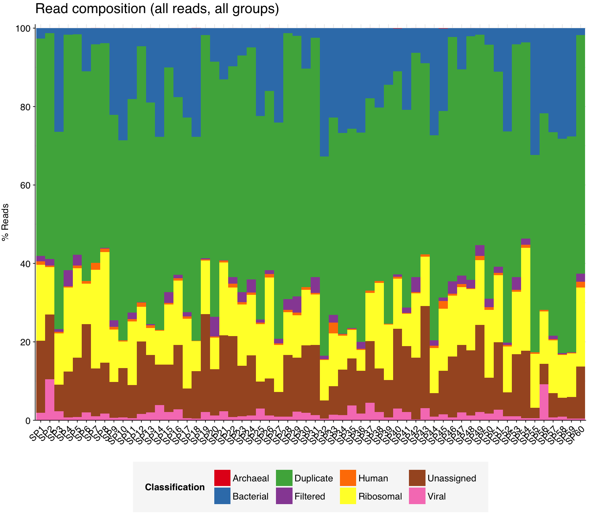
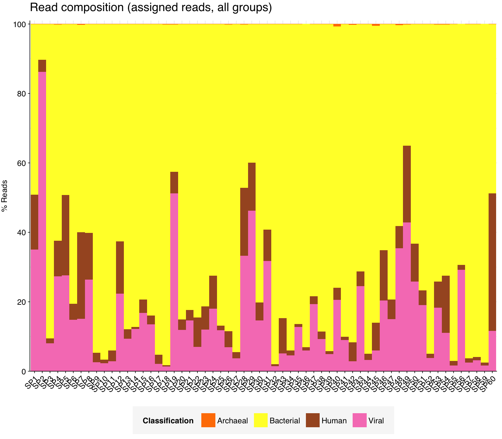
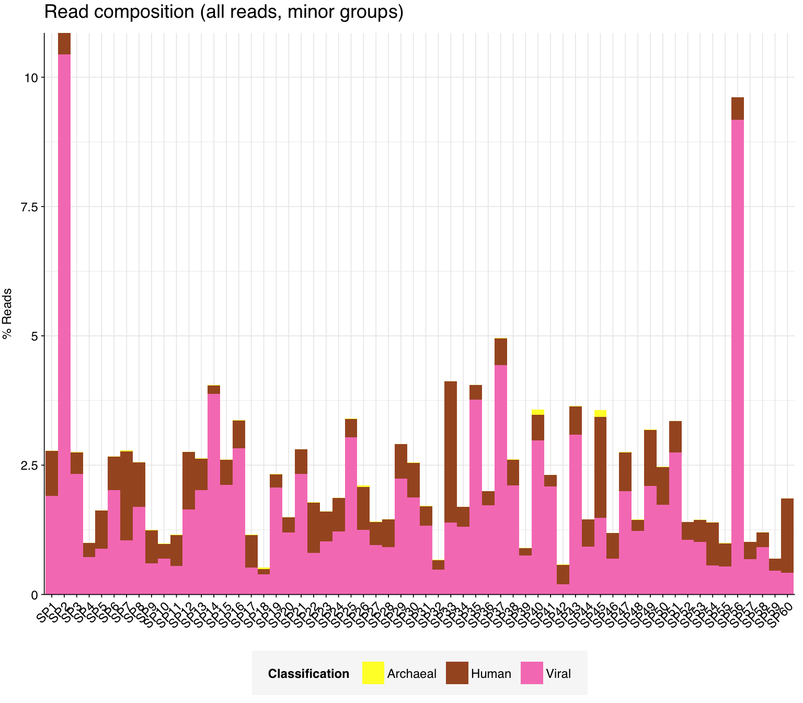
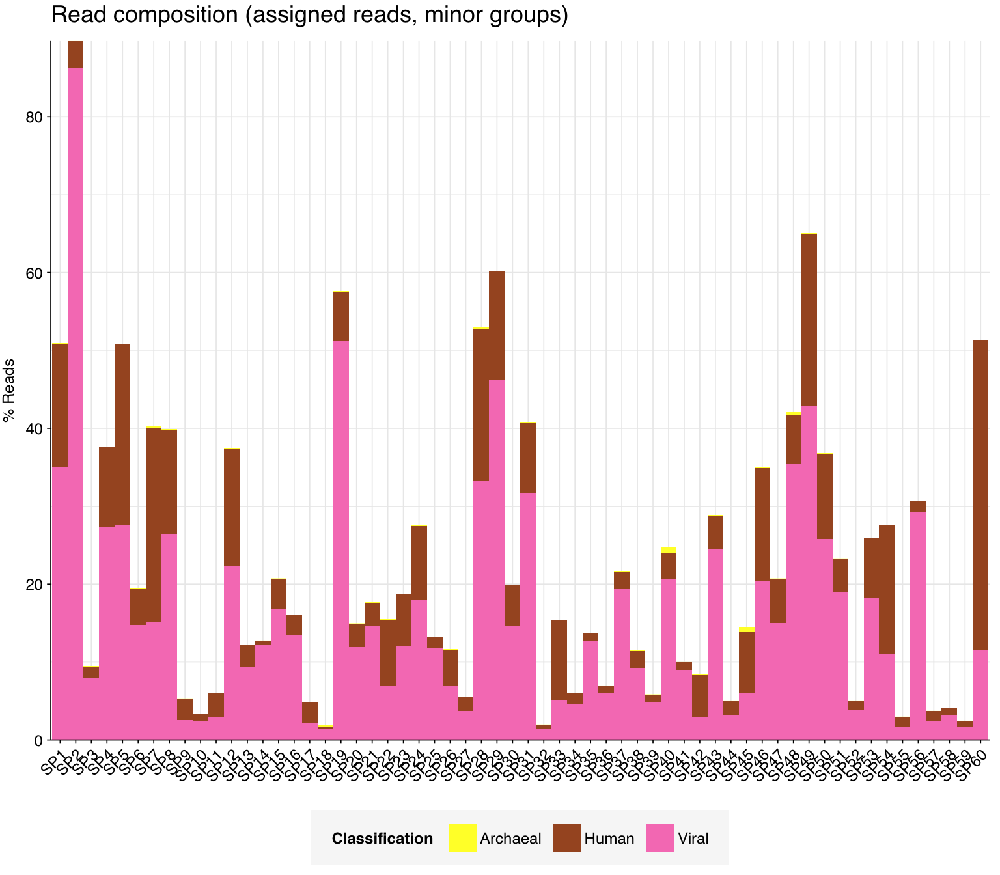
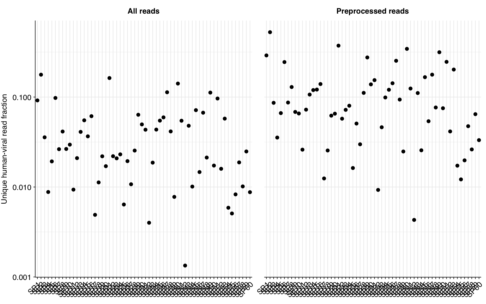
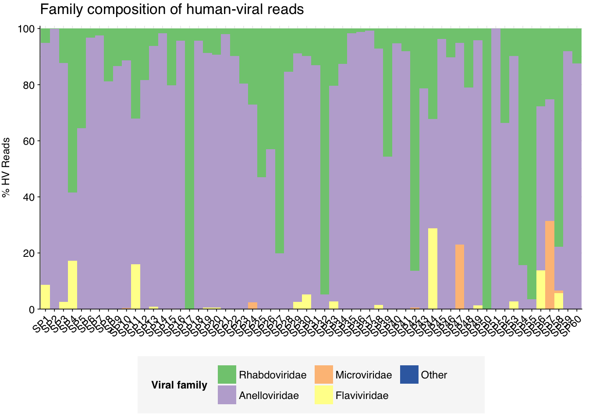

As a part of my time here, I’m exploring blood surveillance for a potential option for the NAO to pursue. Instead of writing a manuscript, we’ve decided to make three blog posts. The first blog post will cover why we’re considering blood, the second blog post will cover the blood industry, and the last blog post will look at the composition of blood.
After exhaustively looking at a bunch of studies, we’ve decided upon two. This is the analysis of the first study. One of the steps in doing so is analyzing relative abundance data in the healthy population. In this post, I analyze Cebria-Mendoza 2021, a dataset with 60 samples from ~600 healthy blood donors in Spain.
The raw data
This dataset is composed of 60 samples which come from plasma pools of anywhere from 8-13 people from Spain. In total, there were 567 healthy individuals that have contributed to this pool. The demographic information that I have for each pool is the gender and age of the donor as well as the number that has contributed to each pool. They did DNA+RNA sampling for each pool, but the reads were not separately sequenced (so we cannot separate them?).
In total, these 60 samples contained 230M read pairs. The samples had 2.3M - 4.8M (mean 3.8M) read pairs each.
Read and base counts of the raw data were consistent with the previous pipeline version, as were read qualities, adapter content, and measured duplication levels.
Read quality in all the samples look quite good/consistent.
The average fraction of reads at each stage in the preprocessing pipeline is shown in the following table. On average, cleaning & deduplication removed about 57% of total read pairs, primarily during duplication. Ribodepletion removed about 6-8% during each round.
Some samples had anywhere as low as 10% all the way up to 60% ribosomal reads.
Code
# Calculate reads lost during ribodepletion (approximation for % ribosomal reads)reads_ribo<-n_reads_rel%>%filter(stage%in%c("dedup", "ribo_secondary"))%>%group_by(sample)%>%summarize(p_reads_ribo=1-n_read_pairs[2]/n_read_pairs[1], .groups ="drop")%>%inner_join(libraries)
As before, to assess the high-level composition of the reads, I ran the ribodepleted files through Kraken2 and summarized the results with Bracken. This time, however, I used the full Standard database instead of Standard-16, and I also used a newer iteration of the database.
Rows: 480 Columns: 4
-- Column specification --------------------------------------------------------
Delimiter: "\t"
chr (2): sample, classification
dbl (2): n_reads, p_reads
i Use `spec()` to retrieve the full column specification for this data.
i Specify the column types or set `show_col_types = FALSE` to quiet this message.
Joining with `by = join_by(sample)`
# Prepare plotting templatesg_comp_base<-ggplot(mapping=aes(x=library, y=p_reads, fill=classification))+scale_x_discrete(name="Plasma pool")+theme_kit+theme(plot.title =element_text(hjust=0, face="plain", size=rel(1.5)))scale_y_pc_reads<-purrr::partial(scale_y_continuous, name ="% Reads", expand =c(0,0), labels =function(y)y*100)geom_comp<-purrr::partial(geom_col, position ="stack", width =1)# Plot overall compositiong_comp<-g_comp_base+geom_comp(data =comp)+scale_y_pc_reads(limits =c(0,1.01), breaks =seq(0,1,0.2))+scale_fill_brewer(palette ="Set1", name ="Classification")+ggtitle("Read composition (all reads, all groups)")g_comp

Code
# Repeat for classified reads onlypalette_assigned<-brewer.pal(9, "Set1")[5:9]g_comp_assigned<-g_comp_base+geom_comp(data =comp_assigned)+scale_y_pc_reads(limits =c(0,1.01), breaks =seq(0,1,0.2))+scale_fill_manual(values=palette_assigned, name ="Classification")+ggtitle("Read composition (assigned reads, all groups)")g_comp_assigned

Code
# Plot composition of minor componentspalette_minor<-brewer.pal(9, "Set1")[6:9]g_comp_minor<-g_comp_base+geom_comp(data=comp_minor)+scale_y_pc_reads()+scale_fill_manual(values=palette_minor, name ="Classification")+ggtitle("Read composition (all reads, minor groups)")g_comp_minor

Code
g_comp_assigned_minor<-g_comp_base+geom_comp(data=comp_assigned_minor)+scale_y_pc_reads()+scale_fill_manual(values=palette_minor, name ="Classification")+ggtitle("Read composition (assigned reads, minor groups)")g_comp_assigned_minor

TODO analyze this above
Total viral content
Total viral fraction average \(1.81 \times 10^{-2}\) across samples. As a fraction of assigned (rather than total) reads, this jumped to \(1.60 \times {-1}\):
The two dominant viruses we see are Anellovirdae and Rhabdovirdae. Followed by these two viral families is Flavivirdae, and lastly, also by a much smaller percent, Microviridae.
Code
# Get viral taxonomyviral_taxa_path<-file.path(data_dir, "total-virus-db.tsv.gz")viral_taxa<-read_tsv(viral_taxa_path, show_col_types =FALSE)# Get Kraken reportsreports_path<-file.path(tax_final_dir, "kraken_reports.tsv.gz")reports<-read_tsv(reports_path, show_col_types =FALSE)%>%inner_join(libraries, by="sample")%>%arrange(sample)# Filter to viral taxakraken_reports_viral<-filter(reports, taxid%in%viral_taxa$taxid)%>%group_by(sample)%>%mutate(p_reads_viral =n_reads_clade/n_reads_clade[1])kraken_reports_viral_cleaned<-kraken_reports_viral%>%select(-pc_reads_total, -n_reads_direct, -contains("minimizers"))%>%select(name, taxid, p_reads_viral, n_reads_clade, everything())%>%ungroupviral_classes<-kraken_reports_viral_cleaned%>%filter(rank=="C")viral_families<-kraken_reports_viral_cleaned%>%filter(rank=="F")
Warning: One or more parsing issues, call `problems()` on your data frame for details,
e.g.:
dat <- vroom(...)
problems(dat)
Code
# Get raw read countsread_counts_raw<-filter(basic_stats_raw)%>%select(sample, n_reads_raw =n_read_pairs)read_counts_preproc<-basic_stats%>%filter(stage=="ribo_initial")%>%select(sample, n_reads_preproc =n_read_pairs)# Get HV read countsread_counts_hv<-mrg_hv%>%filter(hv_status)%>%group_by(sample)%>%count(name="n_reads_hv")read_counts<-read_counts_raw%>%left_join(read_counts_hv, by=c("sample"))%>%mutate(n_reads_hv =replace_na(n_reads_hv, 0))%>%left_join(read_counts_preproc, by=c("sample"))%>%inner_join(libraries, by=c("sample"))%>%select(sample, n_reads_raw, n_reads_preproc, n_reads_hv)%>%mutate(n_samples =1, p_reads_total =n_reads_hv/n_reads_raw, p_reads_preproc =n_reads_hv/n_reads_preproc)read_counts_long<-read_counts%>%pivot_longer(starts_with("p_reads"), names_to="read_group", values_to="p_reads")%>%mutate(read_group =ifelse(read_group=="p_reads_total", "All reads", "Preprocessed reads"))# Combine for displayread_counts_agg<-read_counts%>%mutate(p_reads_total =n_reads_hv/n_reads_raw, p_reads_preproc =n_reads_hv/n_reads_preproc)%>%inner_join(libraries)read_counts_agg_long<-read_counts_agg%>%pivot_longer(starts_with("p_reads"), names_to="read_group", values_to="p_reads")%>%mutate(read_group =ifelse(read_group=="p_reads_total", "All reads", "Preprocessed reads"))%>%inner_join(libraries)# Visualizeg_read_counts<-ggplot(read_counts_agg_long, aes(x=library, y=p_reads))+geom_point()+scale_y_log10(name ="Unique human-viral read fraction")+facet_grid(.~read_group, scales ="free")+theme_kitg_read_counts

TODO do analysis above.
Overall taxonomy and composition
Composition of HV reads was not greatly changed from when looking at all viral reads. The two dominant viruses we see are Anellovirdae and Rhabdovirdae. Followed by these two viral families is Flavivirdae, and lastly, also by a much smaller percent, Microviridae.
Code
# Filter samples and add viral taxa informationsamples_keep<-read_counts%>%filter(n_reads_hv>5)%>%pull(sample)mrg_hv_named<-mrg_hv%>%filter(sample%in%samples_keep, hv_status)%>%left_join(viral_taxa, by="taxid")# Discover viral species & genera for HV readsraise_rank<-function(read_db, taxid_db, out_rank="species", verbose=FALSE){# Get higher ranks than search rankranks<-c("subspecies", "species", "subgenus", "genus", "subfamily", "family", "suborder", "order", "class", "subphylum", "phylum", "kingdom", "superkingdom")rank_match<-which.max(ranks==out_rank)high_ranks<-ranks[rank_match:length(ranks)]# Merge read DB and taxid DBreads<-read_db%>%select(-parent_taxid, -rank, -name)%>%left_join(taxid_db, by="taxid")# Extract sequences that are already at appropriate rankreads_rank<-filter(reads, rank==out_rank)# Drop sequences at a higher rank and return unclassified sequencesreads_norank<-reads%>%filter(rank!=out_rank, !rank%in%high_ranks, !is.na(taxid))while(nrow(reads_norank)>0){# As long as there are unclassified sequences...# Promote read taxids and re-merge with taxid DB, then re-classify and filterreads_remaining<-reads_norank%>%mutate(taxid =parent_taxid)%>%select(-parent_taxid, -rank, -name)%>%left_join(taxid_db, by="taxid")reads_rank<-reads_remaining%>%filter(rank==out_rank)%>%bind_rows(reads_rank)reads_norank<-reads_remaining%>%filter(rank!=out_rank, !rank%in%high_ranks, !is.na(taxid))}# Finally, extract and append reads that were excluded during the processreads_dropped<-reads%>%filter(!seq_id%in%reads_rank$seq_id)reads_out<-reads_rank%>%bind_rows(reads_dropped)%>%select(-parent_taxid, -rank, -name)%>%left_join(taxid_db, by="taxid")return(reads_out)}hv_reads_species<-raise_rank(mrg_hv_named, viral_taxa, "species")hv_reads_genus<-raise_rank(mrg_hv_named, viral_taxa, "genus")hv_reads_family<-raise_rank(mrg_hv_named, viral_taxa, "family")
Code
threshold_major_family<-0.05# Count reads for each human-viral familyhv_family_counts<-hv_reads_family%>%group_by(sample, name, taxid)%>%count(name ="n_reads_hv")%>%group_by(sample)%>%mutate(p_reads_hv =n_reads_hv/sum(n_reads_hv))# Identify high-ranking families and group othershv_family_major_tab<-hv_family_counts%>%group_by(name)%>%filter(p_reads_hv==max(p_reads_hv))%>%filter(row_number()==1)%>%arrange(desc(p_reads_hv))%>%filter(p_reads_hv>threshold_major_family)hv_family_counts_major<-hv_family_counts%>%mutate(name_display =ifelse(name%in%hv_family_major_tab$name, name, "Other"))%>%group_by(sample, name_display)%>%summarize(n_reads_hv =sum(n_reads_hv), p_reads_hv =sum(p_reads_hv), .groups="drop")%>%mutate(name_display =factor(name_display, levels =c(hv_family_major_tab$name, "Other")))hv_family_counts_display<-hv_family_counts_major%>%rename(p_reads =p_reads_hv, classification =name_display)%>%inner_join(libraries)
Joining with `by = join_by(sample)`
Code
# Plotg_hv_family<-g_comp_base+geom_col(data=hv_family_counts_display, position ="stack", width=1)+scale_y_continuous(name="% HV Reads", limits=c(0,1.01), breaks =seq(0,1,0.2), expand=c(0,0), labels =function(y)y*100)+scale_fill_brewer(palette ='Accent', name ="Viral family")+labs(title="Family composition of human-viral reads")+guides(fill=guide_legend(ncol=4))+theme(plot.title =element_text(size=rel(1.4), hjust=0, face="plain"))g_hv_family

Code
# Get most prominent families for texthv_family_collate<-hv_family_counts%>%group_by(name, taxid)%>%summarize(n_reads_tot =sum(n_reads_hv), p_reads_max =max(p_reads_hv), .groups="drop")%>%arrange(desc(n_reads_tot))hv_family_collate
Overall, nothing dangerous was found in the blood, which is totally expected.
My biggest concern is that I’m incompetent and don’t know how to analyze the data at this point which is expected. Let me try uploading this to my notebook and then reevaluate from there.
Source Code
---title: "Workflow of Cebria-Mendoza 2021"subtitle: "Partial analysis of plasma dataset"author: "Harmon Bhasin"date: 2024-07-03format: html: code-fold: true code-tools: true code-link: true df-print: pagededitor: visualtitle-block-banner: red---```{r}#| label: load-packages#| include: falselibrary(tidyverse)library(cowplot)library(patchwork)library(fastqcr)library(RColorBrewer)setwd("/Users/harmonbhasin/work/securebio/nao-harmon/cebriamendoza2021/analysis")source("../../../sampling-strategies/scripts/aux_plot-theme.R")theme_base <- theme_base +theme(aspect.ratio =NULL)theme_kit <- theme_base +theme(axis.text.x =element_text(hjust =1, angle =45),axis.title.x =element_blank(),)tnl <-theme(legend.position ="none")```THIS IS CURRENTLY A WORK IN PROGRESS!As a part of my time here, I'm exploring blood surveillance for a potential option for the NAO to pursue. Instead of writing a manuscript, we've decided to make three blog posts. The first blog post will cover why we're considering blood, the second blog post will cover the blood industry, and the last blog post will look at the composition of blood.After exhaustively looking at a bunch of studies, we've decided upon two. This is the analysis of the first study. One of the steps in doing so is analyzing relative abundance data in the healthy population. In this post, I analyze [Cebria-Mendoza 2021](https://doi.org/10.3390/v13112322), a dataset with 60 samples from \~600 healthy blood donors in Spain.# The raw dataThis dataset is composed of 60 samples which come from plasma pools of anywhere from 8-13 people from Spain. In total, there were 567 healthy individuals that have contributed to this pool. The demographic information that I have for each pool is the gender and age of the donor as well as the number that has contributed to each pool. They did DNA+RNA sampling for each pool, but the reads were not separately sequenced (so we cannot separate them?).In total, these 60 samples contained 230M read pairs. The samples had 2.3M - 4.8M (mean 3.8M) read pairs each.Read and base counts of the raw data were consistent with the previous pipeline version, as were read qualities, adapter content, and measured duplication levels.```{r}#| warning: false#| label: read-qc-data#| include: false# Data input pathsdata_dir <-"/Users/harmonbhasin/work/securebio/nao-harmon/cebriamendoza2021/analysis/"input_dir <-file.path(data_dir, "input")results_dir <-file.path(data_dir, "results")qc_dir <-file.path(results_dir, "qc")hv_dir <-file.path(results_dir, "hv")libraries_path <-file.path(input_dir, "libraries.csv")basic_stats_path <-file.path(qc_dir, "qc_basic_stats.tsv.gz")adapter_stats_path <-file.path(qc_dir, "qc_adapter_stats.tsv.gz")quality_base_stats_path <-file.path(qc_dir, "qc_quality_base_stats.tsv.gz")quality_seq_stats_path <-file.path(qc_dir, "qc_quality_sequence_stats.tsv.gz")# Import libraries and extract metadata from sample nameslibraries_raw <-read_csv(libraries_path, show_col_types =FALSE)meta_data <-read_csv(sprintf('%s/SraRunTable.txt', data_dir)) %>%rename(library=Run)#supplementary_data <- read_excel(sprintf('%s/supplementary_information/Supplementary_Table_S1.xlsx', data_dir))libraries <-left_join(libraries_raw, meta_data) %>%select( library, AvgSpotLen, Collection_Date,`Library Name` ) %>%rename(sample=library,library=`Library Name`)sp_list <-paste0("SP", 1:60)libraries$library <-factor(libraries$library, levels=sp_list)# Import QC datastages <-c("raw_concat", "cleaned", "dedup", "ribo_initial", "ribo_secondary")basic_stats <-read_tsv(basic_stats_path, show_col_types =FALSE) %>%inner_join(libraries, by="sample") %>%arrange(sample) %>%mutate(stage =factor(stage, levels = stages),sample =fct_inorder(sample))adapter_stats <-read_tsv(adapter_stats_path, show_col_types =FALSE) %>%inner_join(libraries, by="sample") %>%arrange(sample) %>%mutate(stage =factor(stage, levels = stages),read_pair =fct_inorder(as.character(read_pair)))quality_base_stats <-read_tsv(quality_base_stats_path, show_col_types =FALSE) %>%inner_join(libraries, by="sample") %>%arrange(sample) %>%mutate(stage =factor(stage, levels = stages),read_pair =fct_inorder(as.character(read_pair)))quality_seq_stats <-read_tsv(quality_seq_stats_path, show_col_types =FALSE) %>%inner_join(libraries, by="sample") %>%arrange(sample) %>%mutate(stage =factor(stage, levels = stages),read_pair =fct_inorder(as.character(read_pair)))# Filter to raw data basic_stats_raw <- basic_stats %>%filter(stage =="raw_concat") adapter_stats_raw <- adapter_stats %>%filter(stage =="raw_concat") quality_base_stats_raw <- quality_base_stats %>%filter(stage =="raw_concat") quality_seq_stats_raw <- quality_seq_stats %>%filter(stage =="raw_concat")# Get key values for readoutraw_read_counts <- basic_stats_raw %>%summarize(rmin =min(n_read_pairs), rmax=max(n_read_pairs),rmean=mean(n_read_pairs), rtot =sum(n_read_pairs),btot =sum(n_bases_approx),dmin =min(percent_duplicates), dmax=max(percent_duplicates),dmean=mean(percent_duplicates), .groups ="drop")```Read quality in all the samples look quite good/consistent.```{r}#| fig-width: 9#| warning: false#| label: plot-basic-stats# Prepare databasic_stats_raw_metrics <- basic_stats_raw %>%select(library,`# Read pairs`= n_read_pairs,`Total base pairs\n(approx)`= n_bases_approx,`% Duplicates\n(FASTQC)`= percent_duplicates) %>%pivot_longer(-library, names_to ="metric", values_to ="value") %>%mutate(metric =fct_inorder(metric))# Set up plot templatesg_basic <-ggplot(basic_stats_raw_metrics, aes(x=library, y=value)) +geom_col(position ="dodge") +scale_x_discrete() +scale_y_continuous(expand=c(0,0)) +expand_limits(y=c(0,100)) +facet_grid(metric~., scales ="free", space="free_x", switch="y") + theme_kit +theme(axis.title.y =element_blank(),strip.text.y =element_text(face="plain") )g_basic```TODO interpret the below plot.```{r}#| label: plot-raw-quality#| fig-width: 8# Set up plotting templatesg_qual_raw <-ggplot(mapping=aes(linetype=read_pair, group=interaction(sample,read_pair))) +scale_linetype_discrete(name ="Read Pair") +guides(color=guide_legend(nrow=2,byrow=TRUE),linetype =guide_legend(nrow=2,byrow=TRUE)) + theme_base# Visualize adaptersg_adapters_raw <- g_qual_raw +geom_line(aes(x=position, y=pc_adapters), data=adapter_stats_raw) +scale_y_continuous(name="% Adapters", limits=c(0,NA),breaks =seq(0,100,10), expand=c(0,0)) +scale_x_continuous(name="Position", limits=c(0,NA),breaks=seq(0,500,20), expand=c(0,0)) +facet_grid(.~adapter)g_adapters_raw# Visualize qualityg_quality_base_raw <- g_qual_raw +geom_hline(yintercept=25, linetype="dashed", color="red") +geom_hline(yintercept=30, linetype="dashed", color="red") +geom_line(aes(x=position, y=mean_phred_score), data=quality_base_stats_raw) +scale_y_continuous(name="Mean Phred score", expand=c(0,0), limits=c(10,45)) +scale_x_continuous(name="Position", limits=c(0,NA),breaks=seq(0,500,20), expand=c(0,0))g_quality_base_rawg_quality_seq_raw <- g_qual_raw +geom_vline(xintercept=25, linetype="dashed", color="red") +geom_vline(xintercept=30, linetype="dashed", color="red") +geom_line(aes(x=mean_phred_score, y=n_sequences), data=quality_seq_stats_raw) +scale_x_continuous(name="Mean Phred score", expand=c(0,0)) +scale_y_continuous(name="# Sequences", expand=c(0,0))g_quality_seq_raw```# Preprocessing## High-level metricsThe average fraction of reads at each stage in the preprocessing pipeline is shown in the following table. On average, cleaning & deduplication removed about 57% of total read pairs, primarily during duplication. Ribodepletion removed about 6-8% during each round.```{r}#| label: preproc-table# Count read lossesn_reads_rel <- basic_stats %>%select(sample, stage, percent_duplicates, n_read_pairs) %>%group_by(sample) %>%arrange(sample, stage) %>%mutate(p_reads_retained = n_read_pairs /lag(n_read_pairs),p_reads_lost =1- p_reads_retained,p_reads_retained_abs = n_read_pairs / n_read_pairs[1],p_reads_lost_abs =1-p_reads_retained_abs,p_reads_lost_abs_marginal = p_reads_lost_abs -lag(p_reads_lost_abs))n_reads_rel_display <- n_reads_rel %>%rename(Stage=stage) %>%group_by(Stage) %>%summarize(`% Total Reads Lost (Cumulative)`=paste0(round(min(p_reads_lost_abs*100),1), "-", round(max(p_reads_lost_abs*100),1), " (mean ", round(mean(p_reads_lost_abs*100),1), ")"),`% Total Reads Lost (Marginal)`=paste0(round(min(p_reads_lost_abs_marginal*100),1), "-", round(max(p_reads_lost_abs_marginal*100),1), " (mean ", round(mean(p_reads_lost_abs_marginal*100),1), ")"), .groups="drop") %>%filter(Stage !="raw_concat") %>%mutate(Stage = Stage %>% as.numeric %>%factor(labels=c("Trimming & filtering", "Deduplication", "Initial ribodepletion", "Secondary ribodepletion")))n_reads_rel_display``````{r}#| label: preproc-figures#| warning: false#| fig-height: 3#| fig-width: 6g_stage_trace <-ggplot(basic_stats, aes(x=stage, group=sample)) + theme_kit# Plot reads over preprocessingg_reads_stages <- g_stage_trace +geom_line(aes(y=n_read_pairs)) +scale_y_continuous("# Read pairs", expand=c(0,0), limits=c(0,NA))g_reads_stages# Plot relative read losses during preprocessingg_reads_rel <-ggplot(n_reads_rel, aes(x=stage, group=sample)) +geom_line(aes(y=p_reads_lost_abs_marginal)) +scale_y_continuous("% Total Reads Lost", expand=c(0,0), labels =function(x) x*100) + theme_kitg_reads_rel```TODO interpret the below plot.```{r}#| warning: false#| label: plot-quality#| fig-height: 8g_qual <-ggplot(mapping=aes(linetype=read_pair, group=interaction(sample,read_pair))) +scale_linetype_discrete(name ="Read Pair") +guides(color=guide_legend(nrow=2,byrow=TRUE),linetype =guide_legend(nrow=2,byrow=TRUE)) + theme_base# Visualize adaptersg_adapters <- g_qual +geom_line(aes(x=position, y=pc_adapters), data=adapter_stats) +scale_y_continuous(name="% Adapters", limits=c(0,20),breaks =seq(0,50,10), expand=c(0,0)) +scale_x_continuous(name="Position", limits=c(0,NA),breaks=seq(0,140,20), expand=c(0,0)) +facet_grid(stage~adapter)g_adapters# Visualize qualityg_quality_base <- g_qual +geom_hline(yintercept=25, linetype="dashed", color="red") +geom_hline(yintercept=30, linetype="dashed", color="red") +geom_line(aes(x=position, y=mean_phred_score), data=quality_base_stats) +scale_y_continuous(name="Mean Phred score", expand=c(0,0), limits=c(10,45)) +scale_x_continuous(name="Position", limits=c(0,NA),breaks=seq(0,140,20), expand=c(0,0)) +facet_grid(stage~.)g_quality_baseg_quality_seq <- g_qual +geom_vline(xintercept=25, linetype="dashed", color="red") +geom_vline(xintercept=30, linetype="dashed", color="red") +geom_line(aes(x=mean_phred_score, y=n_sequences), data=quality_seq_stats) +scale_x_continuous(name="Mean Phred score", expand=c(0,0)) +scale_y_continuous(name="# Sequences", expand=c(0,0)) +facet_grid(stage~., scales ="free_y")g_quality_seq``````{r}#| label: preproc-dedup#| fig-height: 4#| fig-width: 6stage_dup <- basic_stats %>%group_by(stage) %>%summarize(dmin =min(percent_duplicates), dmax=max(percent_duplicates),dmean=mean(percent_duplicates), .groups ="drop")g_dup_stages <- g_stage_trace +geom_line(aes(y=percent_duplicates)) +scale_y_continuous("% Duplicates", limits=c(0,NA), expand=c(0,0))g_dup_stagesg_readlen_stages <- g_stage_trace +geom_line(aes(y=mean_seq_len)) +scale_y_continuous("Mean read length (nt)", expand=c(0,0), limits=c(0,NA))g_readlen_stages```## Effectiveness of ribodepletionSome samples had anywhere as low as 10% all the way up to 60% ribosomal reads.```{r}#| label: ribo-frac#| fig-height: 4#| fig-width: 6# Calculate reads lost during ribodepletion (approximation for % ribosomal reads)reads_ribo <- n_reads_rel %>%filter(stage %in%c("dedup", "ribo_secondary")) %>%group_by(sample) %>%summarize(p_reads_ribo=1-n_read_pairs[2]/n_read_pairs[1], .groups ="drop") %>%inner_join(libraries)reads_ribo_summ <- reads_ribo %>%group_by(sample) %>%summarize(min=min(p_reads_ribo), max=max(p_reads_ribo),mean=mean(p_reads_ribo), .groups ="drop") %>%inner_join(libraries)g_reads_ribo <-ggplot(reads_ribo, aes(x=library, y=p_reads_ribo)) +geom_point() +scale_y_continuous(name="Approx % ribosomal reads", limits=c(0,1),breaks=seq(0,1,0.2), expand=c(0,0), labels =function(y) y*100)+ theme_kitg_reads_ribo```# Taxonomic composition## High-level compositionAs before, to assess the high-level composition of the reads, I ran the ribodepleted files through Kraken2 and summarized the results with Bracken. This time, however, I used the full Standard database instead of Standard-16, and I also used a newer iteration of the database.```{r}#| label: prepare-compositionclassifications <-c("Filtered", "Duplicate", "Ribosomal", "Unassigned","Bacterial", "Archaeal", "Viral", "Human")# Import composition datatax_final_dir <-file.path(results_dir, "taxonomy_final")comp_path <-file.path(tax_final_dir, "taxonomic_composition.tsv.gz")comp <-read_tsv(comp_path) %>%left_join(libraries) comp_minor <- comp %>%filter(classification %in%c("Archaeal", "Viral", "Human", "Other"))comp_assigned <- comp %>%filter(! classification %in%c("Filtered", "Duplicate", "Ribosomal", "Unassigned")) %>%group_by(sample) %>%mutate(p_reads = n_reads/sum(n_reads))comp_assigned_minor <- comp_assigned %>%filter(classification %in%c("Archaeal", "Viral", "Human", "Other"))# Summarize compositionread_comp_summ <- comp %>%group_by(classification) %>%summarize(n_reads =sum(n_reads), .groups ="drop_last") %>%mutate(n_reads =replace_na(n_reads,0),p_reads = n_reads/sum(n_reads),pc_reads = p_reads*100)``````{r}#| label: plot-composition-all#| fig-height: 7#| fig-width: 8# Prepare plotting templatesg_comp_base <-ggplot(mapping=aes(x=library, y=p_reads, fill=classification)) +scale_x_discrete(name="Plasma pool") + theme_kit +theme(plot.title =element_text(hjust=0, face="plain", size=rel(1.5)))scale_y_pc_reads <- purrr::partial(scale_y_continuous, name ="% Reads",expand =c(0,0), labels =function(y) y*100)geom_comp <- purrr::partial(geom_col, position ="stack", width =1)# Plot overall compositiong_comp <- g_comp_base +geom_comp(data = comp) +scale_y_pc_reads(limits =c(0,1.01), breaks =seq(0,1,0.2)) +scale_fill_brewer(palette ="Set1", name ="Classification") +ggtitle("Read composition (all reads, all groups)")g_comp# Repeat for classified reads onlypalette_assigned <-brewer.pal(9, "Set1")[5:9]g_comp_assigned <- g_comp_base +geom_comp(data = comp_assigned) +scale_y_pc_reads(limits =c(0,1.01), breaks =seq(0,1,0.2)) +scale_fill_manual(values=palette_assigned, name ="Classification") +ggtitle("Read composition (assigned reads, all groups)")g_comp_assigned# Plot composition of minor componentspalette_minor <-brewer.pal(9, "Set1")[6:9]g_comp_minor <- g_comp_base +geom_comp(data=comp_minor) +scale_y_pc_reads() +scale_fill_manual(values=palette_minor, name ="Classification") +ggtitle("Read composition (all reads, minor groups)")g_comp_minorg_comp_assigned_minor <- g_comp_base +geom_comp(data=comp_assigned_minor) +scale_y_pc_reads() +scale_fill_manual(values=palette_minor, name ="Classification") +ggtitle("Read composition (assigned reads, minor groups)")g_comp_assigned_minor```TODO analyze this above## Total viral contentTotal viral fraction average $1.81 \times 10^{-2}$ across samples. As a fraction of assigned (rather than total) reads, this jumped to $1.60 \times {-1}$:```{r}#| label: p-viralp_reads_viral_all <- comp %>%filter(classification =="Viral") %>%mutate(read_group ="All reads")p_reads_viral_assigned <- comp_assigned %>%filter(classification =="Viral") %>%mutate(read_group ="Classified reads")p_reads_viral <-bind_rows(p_reads_viral_all, p_reads_viral_assigned)# Plotg_viral <-ggplot(p_reads_viral, aes(x=library, y=p_reads)) +geom_point() +scale_x_discrete(name="Plasma pool") +scale_y_log10(name="Viral read fraction") +facet_grid(.~read_group, scales ="free") +guides(color=guide_legend(nrow=2), shape=guide_legend(nrow=2),linetype=guide_legend(nrow=2)) + theme_kitg_viral```## Taxonomic composition of virusesThe two dominant viruses we see are Anellovirdae and Rhabdovirdae. Followed by these two viral families is Flavivirdae, and lastly, also by a much smaller percent, Microviridae.```{r}#| label: extract-viral-taxa# Get viral taxonomyviral_taxa_path <-file.path(data_dir, "total-virus-db.tsv.gz")viral_taxa <-read_tsv(viral_taxa_path, show_col_types =FALSE)# Get Kraken reportsreports_path <-file.path(tax_final_dir, "kraken_reports.tsv.gz")reports <-read_tsv(reports_path, show_col_types =FALSE) %>%inner_join(libraries, by="sample") %>%arrange(sample)# Filter to viral taxakraken_reports_viral <-filter(reports, taxid %in% viral_taxa$taxid) %>%group_by(sample) %>%mutate(p_reads_viral = n_reads_clade/n_reads_clade[1])kraken_reports_viral_cleaned <- kraken_reports_viral %>%select(-pc_reads_total, -n_reads_direct, -contains("minimizers")) %>%select(name, taxid, p_reads_viral, n_reads_clade, everything()) %>% ungroupviral_classes <- kraken_reports_viral_cleaned %>%filter(rank =="C")viral_families <- kraken_reports_viral_cleaned %>%filter(rank =="F")``````{r}#| label: viral-family-composition#| fig-height: 4#| fig-width: 8major_threshold <-0.01# Identify major viral familiesviral_families_major_tab <- viral_families %>%group_by(name, taxid) %>%summarize(p_reads_viral_max =max(p_reads_viral), .groups="drop") %>%filter(p_reads_viral_max >= major_threshold)viral_families_major_list <- viral_families_major_tab %>%pull(name)viral_families_major <- viral_families %>%filter(name %in% viral_families_major_list) %>%select(name, taxid, sample, p_reads_viral)viral_families_minor <- viral_families_major %>%group_by(sample) %>%summarize(p_reads_viral_major =sum(p_reads_viral), .groups ="drop") %>%mutate(name ="Other", taxid=NA, p_reads_viral =1-p_reads_viral_major) %>%select(name, taxid, sample, p_reads_viral)viral_families_display <- viral_families_major %>%bind_rows(viral_families_minor) %>%arrange(desc(p_reads_viral)) %>%mutate(name =factor(name, levels=c(viral_families_major_list, "Other"))) %>%rename(p_reads = p_reads_viral, classification=name) %>%inner_join(libraries)# Plotg_families <- g_comp_base +geom_comp(data=viral_families_display) +scale_y_continuous(name="% Viral Reads", limits=c(0,1.01), breaks =seq(0,1,0.2),expand=c(0,0), labels =function(y) y*100) +scale_fill_brewer(palette ='Accent')g_families```Excluding *Anellovirdae* and *Rhabdovirdae*, remaining viral sequences are distributed across a wide variety:```{r}#| label: viral-family-composition-exclusion#| fig-height: 4#| fig-width: 8major_threshold_adj <-0.05# Adjust viral family countsviral_families_adj <- viral_families %>%filter(!(name %in%c("Rhabdoviridae","Anelloviridae"))) %>%group_by(sample) %>%mutate(p_reads_viral = p_reads_viral/sum(p_reads_viral))# Identify major viral familiesviral_families_major_tab <- viral_families_adj %>%group_by(name, taxid) %>%summarize(p_reads_viral_max =max(p_reads_viral), .groups="drop") %>%filter(p_reads_viral_max >= major_threshold)viral_families_major_list <- viral_families_major_tab %>%pull(name)viral_families_major <- viral_families_adj %>%filter(name %in% viral_families_major_list) %>%select(name, taxid, sample, p_reads_viral)viral_families_minor <- viral_families_major %>%group_by(sample) %>%summarize(p_reads_viral_major =sum(p_reads_viral), .groups ="drop") %>%mutate(name ="Other", taxid=NA, p_reads_viral =1-p_reads_viral_major) %>%select(name, taxid, sample, p_reads_viral)viral_families_display <- viral_families_major %>%bind_rows(viral_families_minor) %>%arrange(desc(p_reads_viral)) %>%mutate(name =factor(name, levels=c(viral_families_major_list, "Other"))) %>%rename(p_reads = p_reads_viral, classification=name) %>%inner_join(libraries)# Plotpalette_viral <-c(brewer.pal(12, "Set3"), brewer.pal(8, "Dark2"), brewer.pal(9, "Set1"))g_families_adj <- g_comp_base +geom_comp(data=viral_families_display) +scale_y_continuous(name="% Viral Reads", limits=c(0,1.01), breaks =seq(0,1,0.2),expand=c(0,0), labels =function(y) y*100) +scale_fill_manual(values=palette_viral, name ="Viral class")g_families_adj```# Human-infecting virus reads## Overall relative abundanceI calculated the relative abundance of human-infecting viruses in two ways:- First, as the total number of deduplicated human-virus reads in each sample, divided by the number of raw reads ("All reads").- Second, as a fraction of preprocessed (cleaned, deduplicated, computationally ribodepleted) reads ("Preprocessed reads").```{r}#| label: prepare-hv# Import and format readshv_reads_path <-file.path(hv_dir, "hv_hits_putative_collapsed.tsv.gz")mrg_hv <-read_tsv(hv_reads_path, show_col_types =FALSE) %>%inner_join(libraries, by="sample") %>%arrange(sample) %>%mutate(kraken_label =ifelse(assigned_hv, "Kraken2 HV assignment","No Kraken2 assignment")) %>%mutate(adj_score_max =pmax(adj_score_fwd, adj_score_rev),highscore = adj_score_max >=20,hv_status = assigned_hv | highscore) %>%rename(taxid_all = taxid, taxid = taxid_best)``````{r}#| label: count-hv-reads#| fig-width: 8#| warning: false# Get raw read countsread_counts_raw <-filter(basic_stats_raw) %>%select(sample, n_reads_raw = n_read_pairs)read_counts_preproc <- basic_stats %>%filter(stage =="ribo_initial") %>%select(sample, n_reads_preproc = n_read_pairs)# Get HV read countsread_counts_hv <- mrg_hv %>%filter(hv_status) %>%group_by(sample) %>%count(name="n_reads_hv")read_counts <- read_counts_raw %>%left_join(read_counts_hv, by=c("sample")) %>%mutate(n_reads_hv =replace_na(n_reads_hv, 0)) %>%left_join(read_counts_preproc, by=c("sample")) %>%inner_join(libraries, by=c("sample")) %>%select(sample, n_reads_raw, n_reads_preproc, n_reads_hv) %>%mutate(n_samples =1,p_reads_total = n_reads_hv/n_reads_raw,p_reads_preproc = n_reads_hv/n_reads_preproc)read_counts_long <- read_counts %>%pivot_longer(starts_with("p_reads"), names_to="read_group", values_to="p_reads") %>%mutate(read_group =ifelse(read_group =="p_reads_total", "All reads", "Preprocessed reads"))# Combine for displayread_counts_agg <- read_counts %>%mutate(p_reads_total = n_reads_hv/n_reads_raw,p_reads_preproc = n_reads_hv/n_reads_preproc) %>%inner_join(libraries)read_counts_agg_long <- read_counts_agg %>%pivot_longer(starts_with("p_reads"), names_to="read_group", values_to="p_reads") %>%mutate(read_group =ifelse(read_group =="p_reads_total", "All reads", "Preprocessed reads"))%>%inner_join(libraries)# Visualizeg_read_counts <-ggplot(read_counts_agg_long, aes(x=library, y=p_reads)) +geom_point() +scale_y_log10(name ="Unique human-viral read fraction") +facet_grid(.~read_group, scales ="free") + theme_kitg_read_counts```TODO do analysis above.## Overall taxonomy and compositionComposition of HV reads was not greatly changed from when looking at all viral reads. The two dominant viruses we see are Anellovirdae and Rhabdovirdae. Followed by these two viral families is Flavivirdae, and lastly, also by a much smaller percent, Microviridae.```{r}#| label: raise-hv-taxa# Filter samples and add viral taxa informationsamples_keep <- read_counts %>%filter(n_reads_hv >5) %>%pull(sample)mrg_hv_named <- mrg_hv %>%filter(sample %in% samples_keep, hv_status) %>%left_join(viral_taxa, by="taxid") # Discover viral species & genera for HV readsraise_rank <-function(read_db, taxid_db, out_rank ="species", verbose =FALSE){# Get higher ranks than search rank ranks <-c("subspecies", "species", "subgenus", "genus", "subfamily", "family", "suborder", "order", "class", "subphylum", "phylum", "kingdom", "superkingdom") rank_match <-which.max(ranks == out_rank) high_ranks <- ranks[rank_match:length(ranks)]# Merge read DB and taxid DB reads <- read_db %>%select(-parent_taxid, -rank, -name) %>%left_join(taxid_db, by="taxid")# Extract sequences that are already at appropriate rank reads_rank <-filter(reads, rank == out_rank)# Drop sequences at a higher rank and return unclassified sequences reads_norank <- reads %>%filter(rank != out_rank, !rank %in% high_ranks, !is.na(taxid))while(nrow(reads_norank) >0){ # As long as there are unclassified sequences...# Promote read taxids and re-merge with taxid DB, then re-classify and filter reads_remaining <- reads_norank %>%mutate(taxid = parent_taxid) %>%select(-parent_taxid, -rank, -name) %>%left_join(taxid_db, by="taxid") reads_rank <- reads_remaining %>%filter(rank == out_rank) %>%bind_rows(reads_rank) reads_norank <- reads_remaining %>%filter(rank != out_rank, !rank %in% high_ranks, !is.na(taxid)) }# Finally, extract and append reads that were excluded during the process reads_dropped <- reads %>%filter(!seq_id %in% reads_rank$seq_id) reads_out <- reads_rank %>%bind_rows(reads_dropped) %>%select(-parent_taxid, -rank, -name) %>%left_join(taxid_db, by="taxid")return(reads_out)}hv_reads_species <-raise_rank(mrg_hv_named, viral_taxa, "species")hv_reads_genus <-raise_rank(mrg_hv_named, viral_taxa, "genus")hv_reads_family <-raise_rank(mrg_hv_named, viral_taxa, "family")``````{r}#| label: hv-family#| fig-height: 5#| fig-width: 7threshold_major_family <-0.05# Count reads for each human-viral familyhv_family_counts <- hv_reads_family %>%group_by(sample, name, taxid) %>%count(name ="n_reads_hv") %>%group_by(sample) %>%mutate(p_reads_hv = n_reads_hv/sum(n_reads_hv))# Identify high-ranking families and group othershv_family_major_tab <- hv_family_counts %>%group_by(name) %>%filter(p_reads_hv ==max(p_reads_hv)) %>%filter(row_number() ==1) %>%arrange(desc(p_reads_hv)) %>%filter(p_reads_hv > threshold_major_family)hv_family_counts_major <- hv_family_counts %>%mutate(name_display =ifelse(name %in% hv_family_major_tab$name, name, "Other")) %>%group_by(sample, name_display) %>%summarize(n_reads_hv =sum(n_reads_hv), p_reads_hv =sum(p_reads_hv), .groups="drop") %>%mutate(name_display =factor(name_display, levels =c(hv_family_major_tab$name, "Other")))hv_family_counts_display <- hv_family_counts_major %>%rename(p_reads = p_reads_hv, classification = name_display) %>%inner_join(libraries)# Plotg_hv_family <- g_comp_base +geom_col(data=hv_family_counts_display, position ="stack", width=1) +scale_y_continuous(name="% HV Reads", limits=c(0,1.01), breaks =seq(0,1,0.2),expand=c(0,0), labels =function(y) y*100) +scale_fill_brewer(palette ='Accent', name ="Viral family") +labs(title="Family composition of human-viral reads") +guides(fill=guide_legend(ncol=4)) +theme(plot.title =element_text(size=rel(1.4), hjust=0, face="plain"))g_hv_family# Get most prominent families for texthv_family_collate <- hv_family_counts %>%group_by(name, taxid) %>%summarize(n_reads_tot =sum(n_reads_hv),p_reads_max =max(p_reads_hv), .groups="drop") %>%arrange(desc(n_reads_tot))hv_family_collate``````{r}#| label: hv-composition-exclusion#test <- hv_reads_family %>% filter(hit_hv == 1 & name %in% c('Anelloviridae', 'Flaviviridae', 'Hepeviridae', 'Microviridae', 'Rhabdoviridae')) %>% select(name, assigned_name) %>% distinct()#hv_reads_family %>% filter(hit_hv == 1 & name %in% c('Flaviviridae', 'Hepeviridae', 'Microviridae', 'Rhabdoviridae')) %>% select(name, assigned_name) %>% distinct()#hv_reads_family %>% filter(hit_hv == 1) %>% select(name, assigned_name) %>% distinct() %>% filter(!str_detect(tolower(assigned_name), "torque teno"))hv_reads_family %>%select(name, assigned_name) %>%distinct() %>%filter(!str_detect(tolower(assigned_name), "torque teno"))hv_reads_family %>%select(assigned_name) %>%distinct() %>%filter(!str_detect(tolower(assigned_name), "torque teno"))hv_reads_genus %>%select(name) %>%distinct() %>%filter(!str_detect(tolower(name), "torque teno"))```Unsurprisingly we get a lot of Anello virus, specifically torque teno virus. Once I filter those out we get a few interesting viruses: - Rhabdovirus - [Vesiculovirus](https://en.wikipedia.org/wiki/Vesiculovirus) - [Vesicular stomatitis Indiana virus](https://en.wikipedia.org/wiki/Indiana_vesiculovirus) - [Maraba virus](https://en.wikipedia.org/wiki/Oncolytic_virus) - Flavivirus - Pegivirus - [GB virus C](https://en.wikipedia.org/wiki/GB_virus_C)TODO look in to this.# ConclusionOverall, nothing dangerous was found in the blood, which is totally expected.My biggest concern is that I'm incompetent and don't know how to analyze the data at this point which is expected. Let me try uploading this to my notebook and then reevaluate from there.